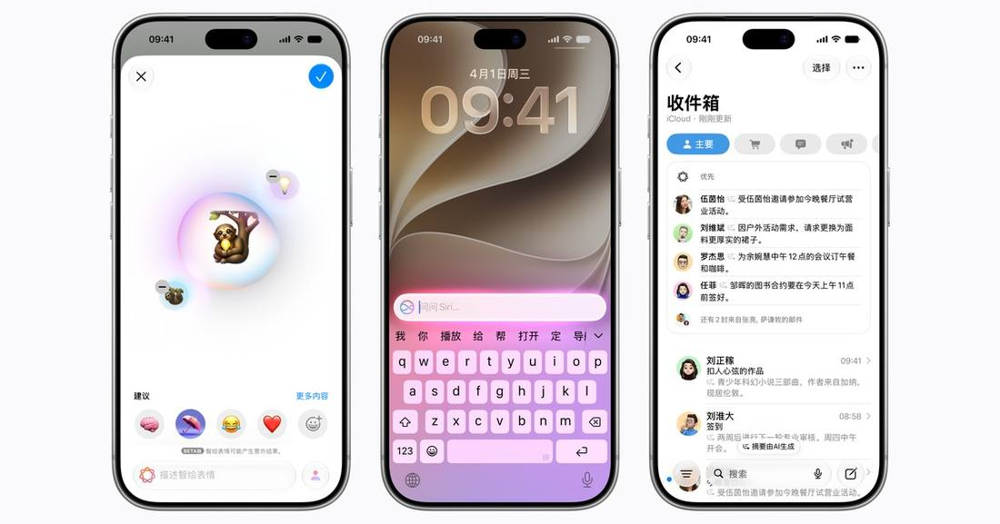

Apple Intelligence Lands in China, With Siri Borrowing Qwen
Apple confirmed on October 31 that the first Apple Intelligence features open in China's developer beta on November 4 and ship formally with iOS 27.3 in December. Siri, Writing Tools and Visual Intelligence will tap Alibaba's Qwen, and the new Siri AI is not in the first batch.

- 01THE PERMITS — Filing in July, network-access license in September: approvals first.
- 02THE ANNOUNCEMENT — Apple announced the rollout via its China Newsroom on October 31.
- 03THE BETA — The developer beta opens for testing from November 4.
WHAT HAPPENEDWhat Happened
Apple confirmed via its China Newsroom on October 31 that the first Apple Intelligence features will open for testing in China with the latest iOS developer beta starting November 4, and ship formally in December with iOS 27.3. It is the first time Apple Intelligence reaches iPhones in mainland China, roughly two years after its US launch.
The arrangement pairs Apple's own models as the base with Alibaba's Qwen plugged into parts of the experience. Siri can hand some requests to Qwen; Writing Tools adds an entry point for writing content from scratch with Qwen; Visual Intelligence can also answer questions about photos and documents. Users sign in with a Qwen account, or with Sign in with Apple.
The first batch is the first generation of features, not the new generation shown at WWDC 2026. Apple states plainly that Siri AI and other next-generation Apple Intelligence features are not included. Supported devices start from the iPhone 15 Pro and Pro Max, including the iPhone 16 and newer models, the iPhone Air and the iPhone Duo, and the device and Siri languages must be English or Simplified Chinese.
LOCAL PARTNERA Local Partner Is the Ticket to Compliance
Apple Intelligence took two years to enter China, and the bottleneck was never technology; it was approval. A Cyberspace Administration of China filing in July and a Ministry of Industry and Information Technology network-access license in September cleared the two gates, and only then did the announcement dare to name dates. Qwen's role here is first part of the compliance structure, and only second a capability supplement.
This structure is likely to become the template. For overseas models entering the Chinese market, pairing a proprietary model with a local partner's model may become the standard answer. Who the local partner is will decide how fast the product can move.
STAGGERED ROLLOUTFirst-Generation Features First: a Deliberate Stagger
Shipping only the first generation amounts to putting Chinese users on the previous product line. US users are already on the new Siri AI; Chinese users first get live translation, Writing Tools, photo cleanup and Genmoji. This is not feature-cutting; it is approval cadence and product generations falling out of sync.
For Apple, launching first matters more than launching complete. The installed base and usage data get running first, giving the next generation's approval a factual basis. The stagger trades for time.
TRAINING PLEDGEThe Training Pledge Is Collateral for Trust
Alibaba, as relayed by media, has pledged that requests and answers sent to Qwen through Apple Intelligence will not be used to train models. The statement addresses Chinese users' most direct concern: where their data goes once it is handed to a local model.
The weight of the pledge depends on whether a verifiable mechanism follows. Oral pledges are easy to give and audits are hard to run. What users can actually verify is whether there is a switch in Settings, and whether the feature truly stops working once it is turned off.
THE SHIFTWhat Changed
SIGNAL JUDGMENT — ANALYSISCompliance First, Features Staggered
Tokenta Signal's judgment: the real news in Apple Intelligence's China entry is not the feature list; it is the structure. An overseas model plus a local partner model solves market entry first, and experience catch-up second.
WHAT REMAINS UNCERTAINWhat Remains Uncertain
EVIDENCEEvidence
The original confirms Apple's October 31 China Newsroom announcement: the first Apple Intelligence features begin testing on November 4 and ship in December with iOS 27.3; Siri, Writing Tools and Visual Intelligence tap Alibaba's Qwen; the new Siri AI is not in the first batch.
PRIMARY SOURCESPrimary Sources
- Apple China Newsroom: Apple Intelligence is coming to China
https://www.apple.com.cn/newsroom/2026/10/apple-intelligence-features-are-coming-to-users-in-china/ - Skimwire: Apple Intelligence is coming to China in December, with Alibaba's Qwen built into Siri
https://www.skimwire.com/apple-intelligence-china-ios-27-3-alibaba-qwen/
RELATEDRelated Intelligence
- Anthropic's Regional Ban Takes Effect: Claude Off Limits in China, Hong Kong and Macau
- Google, TikTok and Meta Sue California to Block Its Under-16 Feed Ban
- Update: Apple Intelligence Beta Goes Live in China, With Qwen Inside Siri
- Nvidia Reportedly Tells Cloud Partners to Cap Chinese Customers at 49% of New Contracts